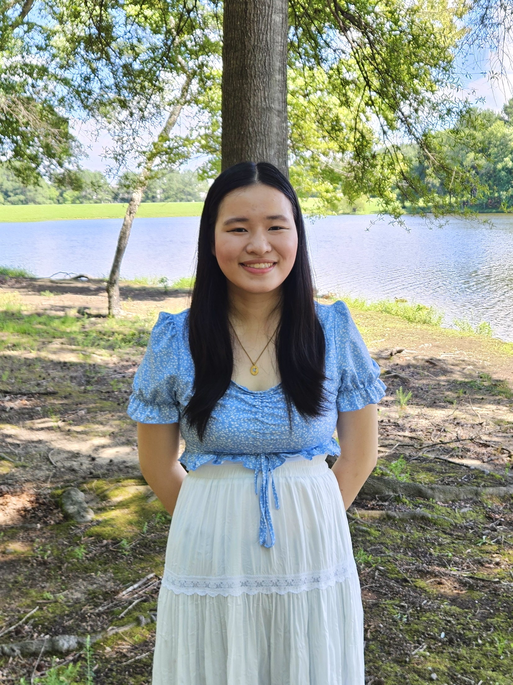

Luna Hou
Luna Hou is a Chinese American writer and teacher from North Carolina, currently based in New York. Her work is published or forthcoming in Uncanny Magazine, Fractured Lit, and One Teen Story. She is Pushcart-nominated, winner of the NC State Shorter Fiction Prize and Dorianne Laux Prize for Poetry, and her work has been supported by scholarships from the Juniper Summer Writing Institute and the Bread Loaf Writers' Conference. Her literary obsessions circle around grief, girlhood, and ghosts.
She's thankful and happy you're here. 💖